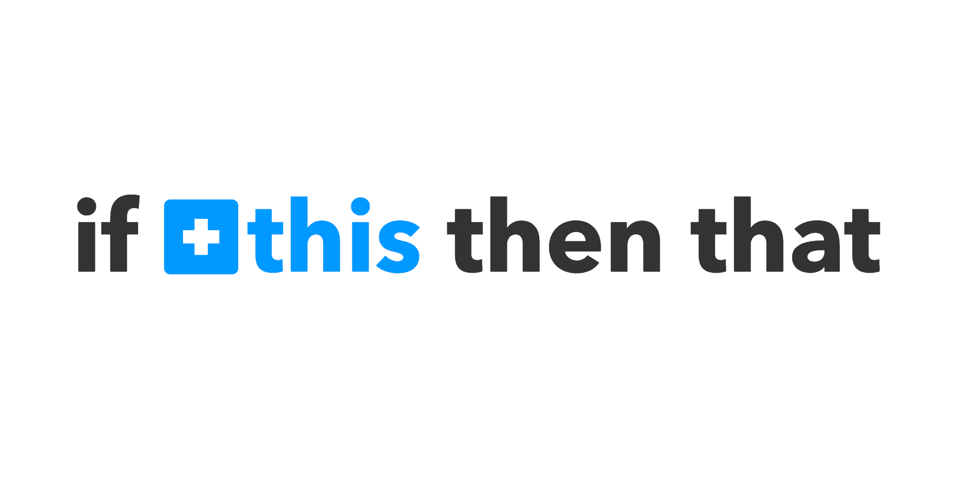
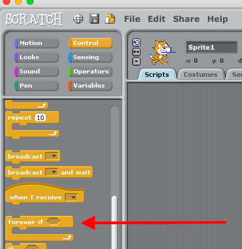
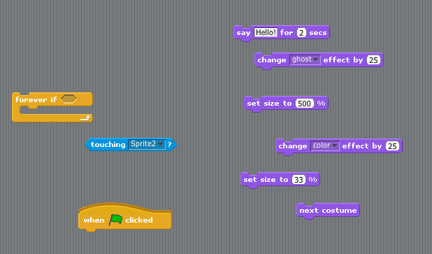

Teaching Point
Students will learn how to use If Statements in their app.
If Statements
If statements or If Blocks are how we make rules for our game. In Super Mario Brothers, if Mario eats a mushroom, he gets bigger. What other rules can we think of from games that we like?
An If block says "If something happens, do something else." We can say "If our character touches a flower, it changes color.", or "If our character eats a cupcake, it says 'Yummy!'. We're going to use If statments to make rules for how our characters act.
We'll use the "If" block with the "Touching" Block to say if our character touches another sprite. Whatever we want to do with the character touches the sprite - we put in the "If Sandwich".
Today's Assignment
We will use "If" Blocks make 4 rules for what happens when our character touches 4 different sprites.
Extra Credit
Use different costumes to make animation for when your sprite touches the other sprites.
Back to School Portal